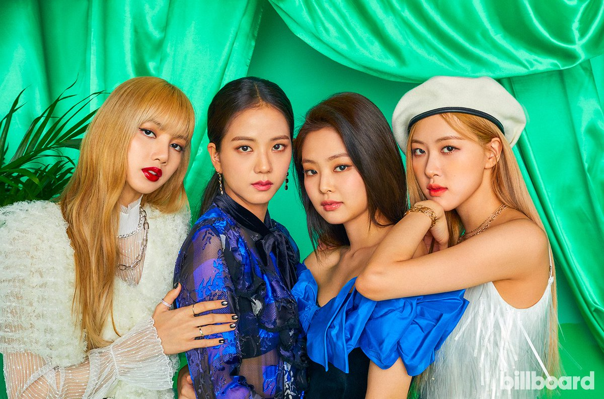
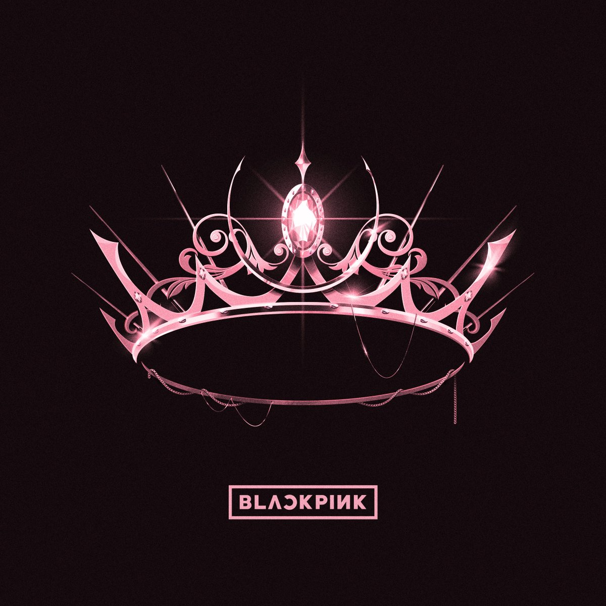
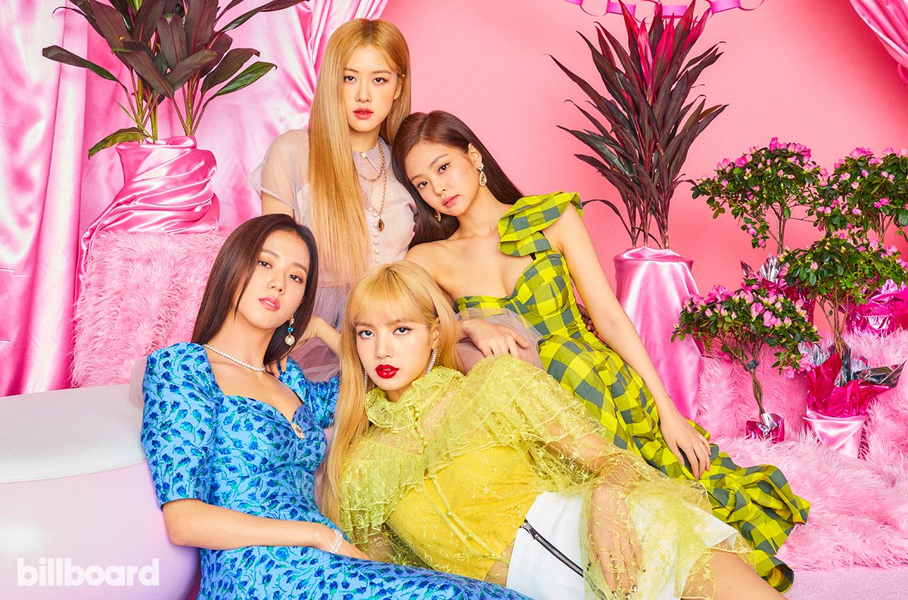

From Wikipedia, the free encyclopedia
This article is about the group. For their eponymous EP, see Blackpink (EP).Blackpink (Korean: 블랙핑크; commonly stylized as BLACKPINK or BLΛƆKPIИK) is a South Korean girl group formed by YG Entertainment, consisting of members Jisoo, Jennie, Rose,Lisa. The group debuted in August 2016 with their single album Square One, which featured "Whistle" and "Boombayah", their first number-one entries on South Korea's Gaon Digital Chart and the Billboard World Digital Song Sales chart, respectively.
Blackpink is the highest-charting female Korean act on the Billboard Hot 100, peaking at number 13 with "Ice Cream" (2020), and on the Billboard 200, peaking at number two with The Album (2020), which is also the first-ever album by a Korean girl group to sell more than one million copies. They were the first Korean girl group to enter and top Billboard's Emerging Artists chart and to top the Billboard World Digital Song Sales chart three times. Blackpink was also the first female Korean act to receive a certification from the Recording Industry Association of America (RIAA) with their hit single ""Ddu-Du Ddu-Du" (2018)", whose music video is currently the most-viewed by a Korean group on YouTube. Their 2018 song "Kiss and Make Up", a collaboration with Dua Lipa, was the first by a Korean group to receive a certification from the British Phonographic Industry (BPI) and a platinum certification from the Australian Recording Industry Association (ARIA).
Contents |

 Blackpink began forming when YG Entertainment held tryouts worldwide for preteen or teenage recruits to create a new girl group after launching its first major girl group, 2NE1, in 2009. According to the members, joining the label as trainees was similar to enrolling in a full-time pop-star academy, with Jennie describing the experience as "more strict than school" and Rosé comparing it to The X Factor with dorm rooms. For members who had left their lives outside of South Korea, the pace of training alongside the culture shock was especially difficult. Preparations for Blackpink's debut began as early as 2011, when YG Entertainment revealed on November 14 that their new girl group would debut in the early half of 2012 and feature at least seven members. Since then, numerous news and rumors surfaced surrounding the new girl group's debut being delayed, although there had been no official information. It was only until May 18, 2016 that YG Entertainment confirmed the girl group would debut that July, stating that the members were selected through years of stiff competition. The label later confirmed that Jang Hanna and Moon Sua, who were introduced to the public as potential members of the new girl group, were not included in the lineup.
Promotions for their debut began in the first week of August 2016 with the release of teaser images, videos, and advertisements. The first girl group to debut under YG Entertainment in seven years, Blackpink released their debut single album, Square One, on August 8, 2016, consisting of tracks "Boombayah" and"Whistle". They charted at number one and two on the Billboard World Digital Song Sales chart, making Blackpink the fastest act to achieve such a feat and the third Korean artist to hold the top two positions simultaneously, after label mates Psy and Big Bang. "Whistle" quickly topped the Gaon digital, download, streaming, and mobile charts. The group also reached number one on the weekly, popularity, music video, and K-pop music video charts of China's biggest music-streaming service, QQ Music. Blackpink's first music show performance aired on August 14, 2016 on SBS's Inkigayo. They won first place on Inkigayo thirteen days after their debut, breaking the record for the shortest time for a girl group to win on a music program after debut. They wrapped up promotions for Square One on September 11, 2016, with another win on Inkigayo.
Blackpink released their second single album, Square Two, consisting of tracks "Playing with Fire" and "Stay", on November 1, 2016. The group began their promotions on Inkigayo on November 6 and on Mnet's M Countdown on November 10. "Playing with Fire" was Blackpink's second single to reach number one on the Billboard World Digital Song Sales chart and the first K-pop girl group song to chart on the Canadian Hot 100. In South Korea, "Playing with Fire" peaked at number three while "Stay" placed in the top ten. Blackpink's commercial success in their first five months earned them several rookie awards at major Korean year-end music award shows, including the Asia Artist Awards,Melon Music Awards,Seoul Music Awards , and Gaon Chart Music Awards. Additionally, Billboard named them one of the best new K-pop groups of 2016.